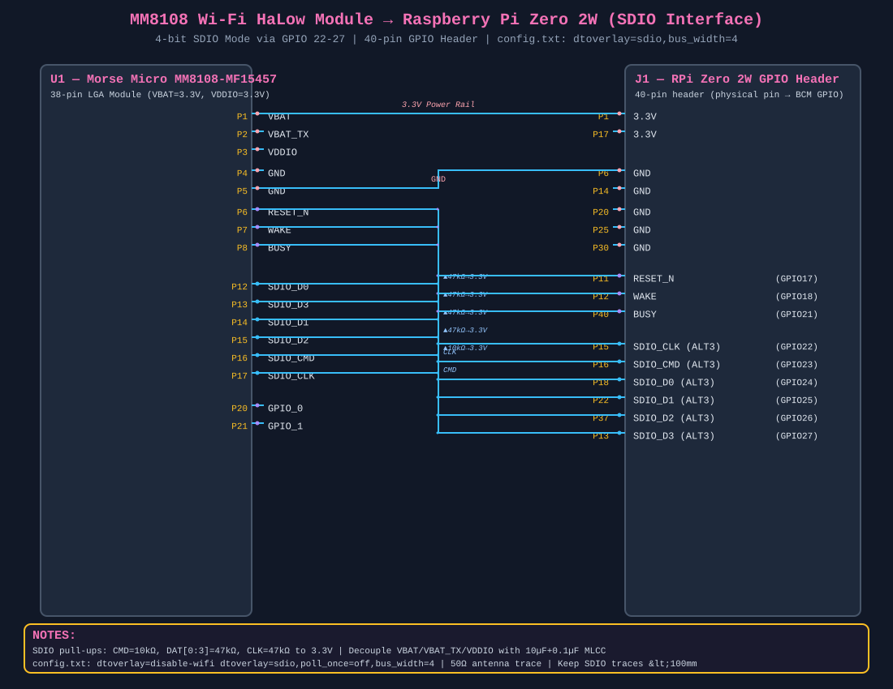

SDIO host interface schematic, pin mapping, and driver setup for the Morse Micro MM8108-MF15457 module connected to a Raspberry Pi Zero 2W via the 40-pin GPIO header.
dtoverlay=disable-wifi in config.txt.

All signals are 3.3V CMOS logic — no level shifting required.
| Signal | MM8108 Pin | Pi GPIO | Pi Header Pin | Direction | Pull-up |
|---|---|---|---|---|---|
| SDIO_CLK | P17 | GPIO22 | P15 | → Module | 47 kΩ → 3.3V |
| SDIO_CMD | P16 | GPIO23 | P16 | ↔ | 10 kΩ → 3.3V |
| SDIO_D0 | P12 | GPIO24 | P18 | ↔ | 47 kΩ → 3.3V |
| SDIO_D1 | P14 | GPIO25 | P22 | ↔ | 47 kΩ → 3.3V |
| SDIO_D2 | P15 | GPIO26 | P37 | ↔ | 47 kΩ → 3.3V |
| SDIO_D3 | P13 | GPIO27 | P13 | ↔ | 47 kΩ → 3.3V |
| RESET_N | P6 | GPIO17 | P11 | → Module | — |
| WAKE | P7 | GPIO18 | P12 | → Module | — |
| BUSY | P8 | GPIO21 | P40 | ← Module | — |
| Module Pin | Voltage | Connect To | Decoupling |
|---|---|---|---|
| VBAT (P1) | 3.0–3.6 V | Pi 3.3V rail (P1 or P17) | 10 µF + 0.1 µF MLCC |
| VBAT_TX (P2) | 3.0–3.6 V | Pi 3.3V rail | 10 µF + 0.1 µF MLCC |
| VDDIO (P3) | 2.25–3.6 V | Pi 3.3V rail (same as VBAT) | 10 µF + 0.1 µF MLCC |
| GND (P4, P5) | — | Pi GND | — |
Add these lines to /boot/config.txt on the Pi's SD card:
# Disable onboard Wi-Fi/BT (conflicts with external SDIO) dtoverlay=disable-wifi # Enable SDIO on GPIO22-27 (Arasan eMMC controller, 4-bit mode) dtoverlay=sdio,poll_once=off,bus_width=4
Alternatively, if you only need 1-bit SDIO (fewer wires):
dtoverlay=sdio,poll_once=off,bus_width=1,gpios_22_25
The MM8108 requires the Morse Micro Linux driver and matching firmware binaries.
git clone https://github.com/MorseMicro/morse_driver.git cd morse_driver git checkout # pick a release tag, e.g. rel_1_16_4 # Build for the Pi (cross-compile from x86) make ARCH=arm CROSS_COMPILE=arm-linux-gnueabihf- \ KERNEL_SRC=/path/to/rpi-kernel \ CONFIG_WLAN_VENDOR_MORSE=m \ CONFIG_MORSE_SDIO=y \ CONFIG_MORSE_USER_ACCESS=y
This produces morse.ko and dot11ah.ko. Install them into the Pi's /lib/modules/.
git clone https://github.com/MorseMicro/morse-firmware.git cd morse-firmware make install # Installs to $DESTDIR/lib/firmware/morse/ # Or manually copy to /lib/firmware/morse/ on the Pi
🐙 morse_driver → 🐙 morse-firmware → 🐙 Morse Micro GitHub → hostap (HaLow) → Morse Community →
make \ KERNEL_SRC=../linux \ CONFIG_WLAN_VENDOR_MORSE=m \ CONFIG_MORSE_SDIO=y \ CONFIG_MORSE_USER_ACCESS=y \ CONFIG_MORSE_VENDOR_COMMAND=y
Kconfig options:
CONFIG_MORSE_SDIO=y — SDIO host interface (required)CONFIG_MORSE_USER_ACCESS=y — userspace CLI access (recommended)CONFIG_MORSE_VENDOR_COMMAND=y — vendor-specific nl80211 commands